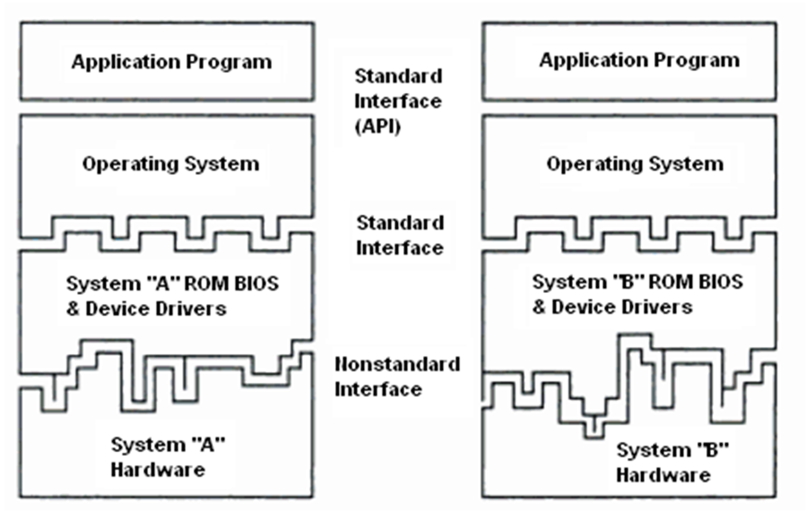
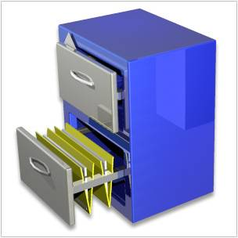
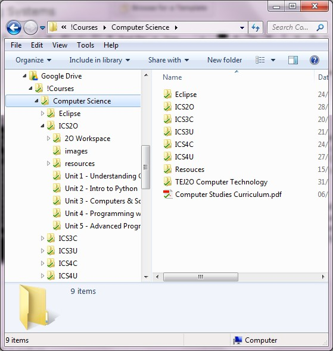
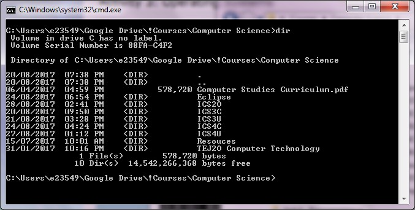
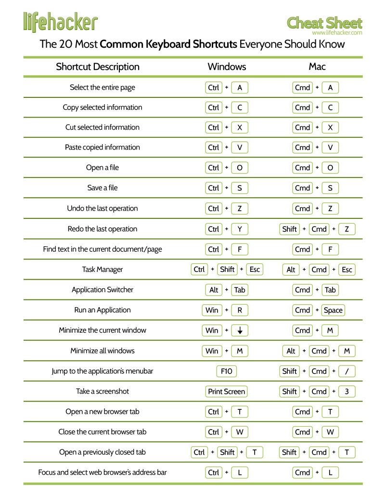

Unit 1: Understanding Computers
Activity 3: Operating Systems
Code.org: How Computers Work Video series
 |
The following videos from code.org provide an overview of how computers work. We will watch a few videos from this series at the start of each activity.
|
|---|
Operating System Functions
An operating system is a collection of programs that the computer uses to manage itself and use its resources efficiently. It shields the user of the machine from the low-level details of the machine’s hardware operation and provides frequently needed facilities.
|
A computer system can be broken down into 4 primary layers, some hardware and some software. The purpose of layered design is to enable a given operating system and applications to run on different hardware. |
 Computer
Layers |
|---|
The Operating System, or OS, is the program that manages the interaction between the user, other programs, system resources and the computer peripherals. Most major OSs use a Graphical User Interface (GUI) to interact with the user. The most common OSs for laptops and desktops are Windows, OSX for the Macintosh, and Unix/Linux.
Network Servers, mobile devices and other devices may use a different version of these common operating systems, or a completely different OS. Network servers might not use a GUI interface, but might still use a command line for the interaction with the network administrator.
|
Watch the following video on the history and evolution of operating systems: |
|---|
Functions of an operating system include:
- Process Management
- Input/Output
- Memory Management
- File Management
- Networking
 |
Recall in the previous activity we learned about System Software. One important role of system software is to load the operating system of the computer into RAM.
|
|---|
File Management
We manage files by saving them in folders in a hierarchical file system. A file can contain a program, a text document, an image, or other data. To an operating system, a data file is simply a sequence of bytes, and it is the responsibility of the software program reading the file to understand the meaning and internal layout of the information.
It is helpful to understand file management concepts by relating them to a paper-filing system, such as a file cabinet. The root directory is the first or top-most directory. It is like the room that the file cabinet is stored in.
- In the Windows operating system, the root directory is assigned a letter, such as “c:\” or “d:\”.
- In the Unix/Linux operating system, the root directory is denoted “/”.
|
In a flat file system, all files are placed in the root directory. As the number of files grows, it becomes more and more difficult to manage this type of file system. This is like having papers strewn about your room, with no drawers to put them in. |
|
|---|
|
 |
In a hierarchical file system, high-level directories may be placed inside the root directory. These are like the drawers in the file cabinet.
Directories may have sub-directories, which are like folders in the drawers. Files may be placed in the root directory (room), the high-level directories (drawer), or in sub-directories (folders). |
|---|
|
This structure is often referred to as a directory tree, since the root directory is like the root of a tree – the starting point where all the branches originate. Often, the words folder and directory are used interchangeably.
Folder is the term more often used in Windows and GUI-based OSs. Folders and files are displayed to the user with icons (small pictures that users may click on to interact with that file or folder). |
 |
|---|
|
 |
Directory is the term used more in Unix and text-based OSs. In OSs without GUIs, files and folders are simply displayed as text. To view the content of a directory, you must give a text command, such as dir in DOS or ls in Linux/Unix. |
|---|
There are a number of utilities provided by the operating system to manage files:
- Copy
- Create a new version of the same file and places it in a new location.
- If the user attempts to copy a file that already exists, computer may do one of the following (some OSs give the user a choice)
- overwrite the file,
- indicate that the file may not be placed here, or
- give the file a different name
- Move
- Removes the file from it current location (directory) and places it in a new one.
- Delete (del)
- Removes the file from its current location.
- Important note: most operating systems do not actually delete the file, but instead they delete the information about where to find the file.
- But the data is still on the hard drive!
- It is very important to format your drive to remove all the data before disposing a hard drive.
- Rename
- Allows you to give the file a new name.
- There are certain naming conventions that can help you organize your files.
- put the date in the name, (format yyyy-mm-dd) or include numbers (ex: version #) to help the files sort into a logical order.
- Be as descriptive as possible. Bad: project. Good: File Exercise 1
- Some characters are forbidden in filenames, such as \ / : * “ ? < > |
- Create Folder (mkdir)
- Allows you to create a sub-directory or sub-folder within the current folder.
- Create Shortcut
- Allows you to create a link to another file or directory.
- This is appropriate for files and folders that are often used, but buried far down in the directory tree.
There are many ways that these utilities are available
- pull-down menus (From the top menu bar)
- context menus (right click)
- shortcut keys
- drag-and-drop
- text commands (DOS and text-based OS)
Keyboard Shortcuts
With the prevalence of GUI-based OSs, many computer users are dependent upon their mouse or touchscreen to navigate their computer. Before GUIs were commonly available, all computer users had to be familiar with keyboard based commands to accomplish tasks. This could mean typing the word "rename" when renaming a file, or using the function keys at the top of your keyboard to save a file in a word processor.
Take a moment to read through the following websites that give some tips and advice on using keyboard shortcuts.
 |
|---|
Invest some time to learn and use keyboard shortcuts throughout this course. In additional to helping your productivity, you won't be
tripped up if your mouse experiences a malfunction! .. Or if your teacher decides to test you by locking all of them up ... just
sayin'.

Evidence of Learning
Operating Systems Tasks
Once you have read the lesson and watched the videos above, complete the following tasks:
- Keyboard Shortcuts
- Operating Systems Research
- Any specific hardware requirements for the OS (provide a link to the website that you used)
- The cost to purchase the OS (again, provide a link)
- Features of this OS (why do people like it?)
- Limitations of the OS (what do people complain about?)
You were shown an image during this activity listing a number of useful keyboard shortcuts. Now it's time to research and share with your classmates. You can use the websites linked to during this activity, or find your own.
Your task: Share 1 keyboard shortcut with the class that would be useful to know about. You must indicate what keystrokes are needed, a brief description of what it does, and which applications or OSs that it works with. If you learned it from a website, post a link to the website that you found it on.
You must find a shortcut that is 1) Not on the list I posted, and 2) Not already posted by a classmate!
Share your shortcut using the Padlet link provided on the document in the evidence card. You MUST either sign-in to Padlet with your @ocsbstudent email, OR write your FULL NAME at the top of your post. Otherwise, you will not get credit for your work!
Choose 2 (two) different operating systems and complete the comparison chart found in Hapara. (Choose OSs with different developers, eg: you may compare macOS and Windows, but not Windows 8 and Windows 10.) You may include OSs for mobile devices as well (iOS, Android, etc) for this assignment. If you are not sure about your choice, check with your teacher.
In your comparison chart you must include:
Click Submit on the Activity 3 Evidence Card when you are done this task.